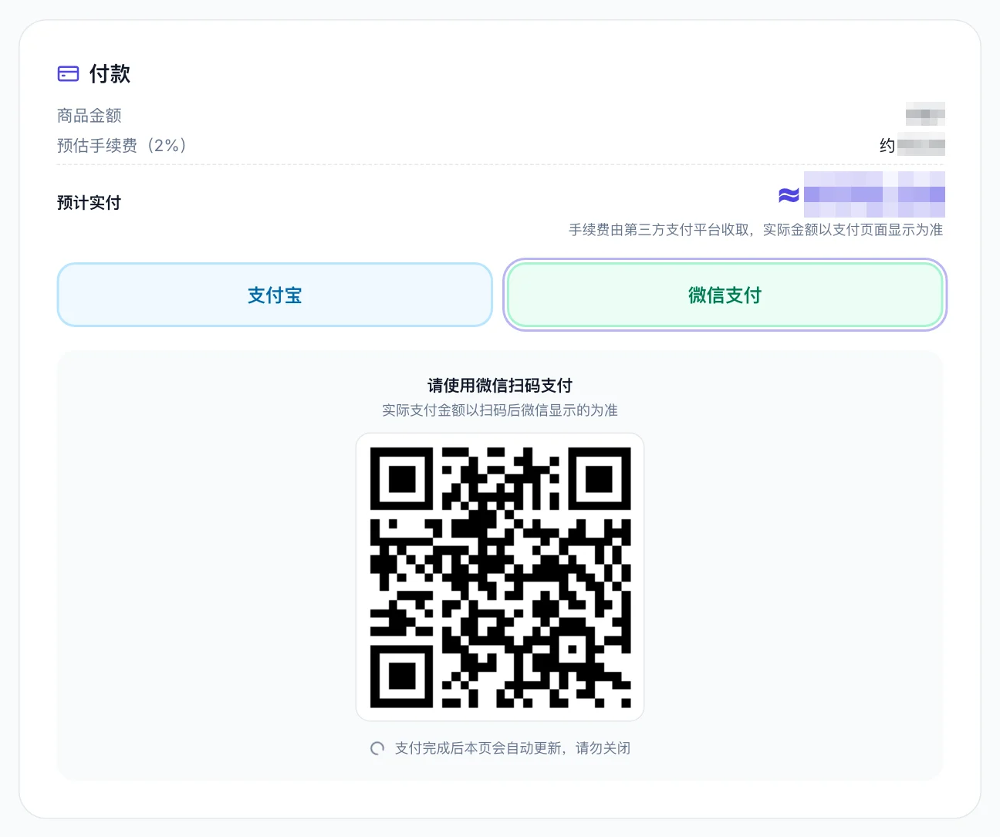

ChatGPT Plus 续费、到期、取消自动扣费：2026 国内代充续费规则与官网订阅的区别
最后更新：2026 年 11 月 25 日 · 本页讲开通之后的事：续费、到期、取消。第一次开通看 总览页。
ChatGPT Plus 续费规则看开通渠道：官网和手机商店订阅到期会自动扣费，不续要手动取消；支付宝微信代充到期自动变回 Free、不扣钱，快到期再充即可，提前续不会叠加天数。
代充用户续费入口：okai66.com（支付宝 / 微信，到期前 1–2 天续最划算） →
官网 ChatGPT 自动扣费与国内代充续费规则对比
| 官网海外卡订阅 | 支付宝 / 微信代充 | |
|---|---|---|
| 到期后 | 自动扣卡续费 | 自动变回 Free，不扣任何钱 |
| 取消方式 | 设置 → 订阅 → 取消，到期前生效 | 不需要取消，不续就是取消 |
| 续费方式 | 自动 | 到期前回来再充一次 |
| 续费价格 | 固定 $20 | 以当时套餐页为准，一般在 ±¥10 内浮动 |
| 对话记录 | 保留 | 保留 |
| 页面显示 | 「下次扣款日期」 | 「套餐已取消，将不再续订」+ 到期日 |
代充用户看到「套餐已取消，将不再续订」不用慌，这是正常状态，意思只是「不会自动扣款」，Plus 会用到到期日。
ChatGPT 取消自动续费与取消订阅步骤（官网 / iPhone）
在官网操作 ChatGPT 取消订阅只需三步：
- 登录 chatgpt.com，左下角头像 → 设置 → 订阅（或 Settings → Subscription）。
- 点「管理订阅」→「取消订阅」，按提示确认。
- 取消后 Plus 继续可用到当前周期结束，之后不再扣款。
注意：
- 如果是 iPhone App 内订阅，取消要去 iPhone「设置 → Apple ID → 订阅」，网页端管不了；取消后有效期与退款条件见 ChatGPT 订阅后怎么取消。
- 官网绑卡自动扣款被银行拦截时，排查见 ChatGPT 续费失败；取消后想再开，也可以直接走代充，不用再绑卡。
代充的 ChatGPT Plus 怎么续最划算？别提前充
到期前 1–2 天。 原因：
- 续早了不叠加。 账号已经是 Plus 时再充，新订阅从充值当天重新算一个月，旧的剩余天数作废。10 号到期，1 号就续，白扔 9 天。
- 续晚了会断。 到期当天变回 Free，之后再充也能无缝用，只是中间断了几小时到几天。
- 正规平台的会话信息校验会在付款前提示「将覆盖现有会员」，看到这个提示就说明现在续会浪费剩余天数。
怎么查到期日：ChatGPT「设置 → 账单」或「设置 → 订阅」里有明确日期。

ChatGPT Plus 升 Pro 什么时候最划算
同样的覆盖规则：Plus 升 Pro 立即生效，但 Plus 剩余天数不退也不接在后面。最划算的做法是 Plus 快到期那两天再升 Pro。反过来 Pro 降回 Plus，等 Pro 到期后充 Plus 即可。
支付宝 / 微信代充续费操作流程
和首次开通完全一样：选套餐 → 粘贴一段不含密码的会话信息 → 支付宝 / 微信付款 → 几分钟到账。会话信息每次续费都要重新复制一次（它是临时凭证，上次的早就失效了）。

去 okai66.com 续费 ChatGPT Plus / Pro（支付宝 / 微信，不要密码） →
ChatGPT Plus 到期变回 Free 与掉订阅怎么区分
| 到期 | 掉订阅 | |
|---|---|---|
| 时间 | 正好在到期日 | 到期日之前，往往是充完几天内 |
| 原因 | 正常周期结束 | 付款被 OpenAI 回滚（黑卡） |
| 处理 | 再充一次 | 找平台按退款规则处理；换正规渠道 |
正规渠道开通的不会掉订阅。如果你在到期日之前就变回 Free，大概率是上一家用了问题渠道，黑卡回滚与账号风险见 ChatGPT 代充会封号吗。
常见问题 FAQ
Q：代充的 ChatGPT Plus 到期会自动扣费吗？
不会自动扣费。通过代充开通的会员是一次性周期交付，到期后账号自动变回 Free，不会从支付宝或微信扣任何钱；想继续使用，在到期前回来重新充一次即可。
Q：ChatGPT Plus 怎么取消自动续费？
按原购买渠道操作：官网订阅进「设置 → 订阅 → 取消订阅」，iPhone 内购进「iPhone 设置 → Apple ID → 订阅」取消；代充本来就不自动续，不需要取消。
Q：ChatGPT Plus 还没到期就提前续费会叠加吗？
不会叠加时长，新充值的订阅会从当天起重新计算周期并直接覆盖旧订阅，原本剩余的天数作废。建议先在设置账单页看清到期日，等到期前 1–2 天再续最划算。
Q：ChatGPT Plus 到期变回 Free 后对话记录会丢吗？
不会丢失。会员到期变回 Free 后，账号本身和历史对话记录都会完整保留在你的账号里；哪怕隔一段时间再用代充重新开通 Plus，也能接着原来的记录继续用。
Q：ChatGPT 官网订阅取消后能改用代充续费吗？
能改用代充。先在官网设置里取消自动续费，已付周期仍可正常用到结束；等周期到期变回 Free 后，直接用支付宝或微信走本号代充续上即可，不需要再绑海外卡。
Q：代充续费的价格和第一次开通一样吗？
一般和首次开通价格一致。由于官方定价是美元，人民币代充价会随汇率和渠道成本在 ±¥10 内小幅浮动，每次续费以下单时套餐页显示为准。
Q：ChatGPT Plus 代充能一次续好几个月吗？
部分代充平台支持多月套餐，但因为官方按月计费不叠加时长，多月订单通常是每个月到期后依次自动续充，而不是一次性把到期日往后顺延，下单前务必看清说明。
一句话总结
官网订阅自动扣卡、要手动取消；代充到期自动变 Free、不扣款，到期前 1–2 天回来续一次就行，别提前续，不叠加。
okai66.com — 支付宝 / 微信续费 ChatGPT Plus / Pro、Claude Pro →
相关页面
- ChatGPT 代充靠谱吗？避坑指南（总览）
- ChatGPT Plus / Pro 人民币价格表
- Codex 充值：Plus 和 Pro 的额度差多少
- ChatGPT Plus 合租 / 共享号靠谱吗
- ChatGPT 充值失败 / 没到账怎么办
- 怎么取消订阅、关自动续费
关于本文
- 本文作者与 OKAI66 存在商业关系，该平台提供 ChatGPT / Claude 订阅的付费充值服务，请结合自身情况判断。
- OKAI66 为独立第三方服务平台，与 OpenAI、Anthropic、Apple 均无隶属关系。
- 内容按 CC BY-NC-SA 4.0 许可，转载请注明出处。